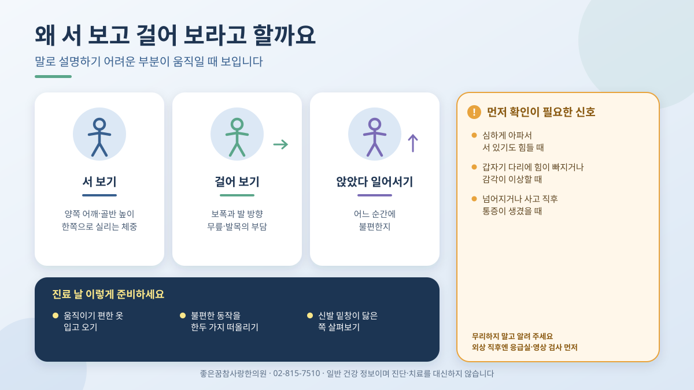

이종호 한의사 감수좋은꿈참사랑한의원 대표원장 (한의사 면허번호 19769)발행 2026-11-23 · 수정 2026-11-25
이 글의 차례
진료실에서 "한번 서 보세요", "몇 걸음 걸어 보세요"라고 하는 것은 통증이 어떤 동작에서 나타나는지와 몸이 어느 쪽으로 쏠려 있는지를 눈으로 확인하기 위해서입니다. 말로 설명하기 어려운 부분이 직접 움직일 때 드러나는 경우가 많기 때문입니다. 아픈 동작은 무리하지 않는 범위에서만 확인합니다.
왜 움직임을 직접 보나요
- 같은 허리 통증이라도 앉았다 일어설 때 아픈지, 걸을 때 아픈지에 따라 살펴볼 곳이 달라집니다.
- 본인은 느끼지 못하는 어깨와 골반 높이 차이, 한쪽으로 실리는 체중이 서 있는 모습에서 보이기도 합니다.
- 걸을 때의 보폭과 발 방향을 보면 무릎이나 발목에 부담이 가는 습관을 짐작할 수 있습니다.
- 치료 앞뒤로 같은 동작을 다시 보면 달라진 점을 함께 확인하기 쉬워집니다.
진료실에서 자주 보는 동작
- 서 있는 모습: 앞, 옆, 뒤에서 어깨와 골반 높이, 머리 위치, 체중이 실린 쪽을 봅니다.
- 걷는 모습: 보폭, 발이 바닥에 닿는 방향, 팔 흔들림의 좌우 차이를 봅니다.
- 앉았다 일어서기: 손으로 짚는지, 어느 순간 멈칫하는지를 봅니다.
- 허리 굽히기와 젖히기, 고개 돌리기, 팔 올리기: 어느 방향에서 어디가 당기는지를 확인합니다.
- 한 발로 서기, 발끝이나 발뒤꿈치로 서기: 필요할 때 균형과 다리 힘을 봅니다.
자주 하는 오해
- 아픈 곳만 보면 될 텐데 왜 다른 동작까지 하느냐고 여기기 쉽지만, 통증에 영향을 주는 곳이 아픈 자리와 떨어져 있는 경우가 있어 몸 전체의 움직임을 봅니다.
- 동작을 보여 줄 때 참고 끝까지 해야 한다고 생각하기 쉽지만, 아픈 지점에서 멈추고 그 자리를 알려 주시는 것이 더 쓸모 있는 정보가 됩니다.
- 걷는 모습을 보는 것은 다리가 아픈 분에게만 하는 일이라고 여기기 쉽지만, 허리나 어깨가 불편한 분도 걸을 때 몸의 쏠림이 드러나기도 합니다.
- 한 번 본 자세로 체형이 정해진다고 걱정하기 쉽지만, 그날의 피로와 통증에 따라 자세는 달라질 수 있어 진료마다 다시 봅니다.
예를 들면 이런 경우입니다
- 예를 들어 허리가 아파 오신 직장인이 앉았다 일어설 때만 아프다면, 서 있을 때와 걸을 때는 어떤지 비교해 어떤 동작이 부담을 주는지 좁혀 봅니다.
- 예를 들어 무릎이 불편한 어르신의 걷는 모습에서 한쪽 발끝이 바깥으로 많이 벌어진다면, 발목과 엉덩이 쪽 움직임까지 함께 살펴봅니다.
- 예를 들어 아이를 안고 지내는 부모가 한쪽 어깨만 뻐근하다면, 서 있는 모습에서 아이를 주로 안는 쪽의 어깨와 골반 높이를 비교해 봅니다.
- 예를 들어 하루 종일 서서 일하는 분이 저녁마다 허리가 묵직하다면, 서 있을 때 체중을 어느 쪽 다리에 싣는지와 신발 바닥의 닳은 모양을 함께 봅니다.
먼저 이렇게 여쭙니다
- 어떤 동작에서 가장 불편한가요? 팔 들기, 고개 돌리기, 계단 중 어느 쪽인가요?
- 오래 앉아 일하시나요? 다리를 꼬는 습관이 있나요?
- 신발 한쪽만 유난히 닳나요?
- 예전에 다친 부위나 수술한 곳이 있나요?
- 하루 중 어느 시간대에 가장 불편하신가요?
일상에서 먼저 해 볼 수 있는 것
- 진료 날에는 몸을 움직이기 편한 옷 입고 오기
- 불편한 동작을 미리 한두 가지 떠올려 두기
- 자주 신는 신발 밑창이 어느 쪽으로 닳았는지 살펴보기
- 거울 앞에서 양쪽 어깨 높이를 한번 비교해 보기
- 진료 날에는 벗고 신기 쉬운 신발을 신고 오기
스스로 점검해 보세요
- 신발 밑창이 한쪽만 유난히 닳는다
- 사진을 찍으면 한쪽 어깨가 늘 내려가 있다
- 의자에서 일어날 때 손으로 짚어야 편하다
- 오래 걸으면 한쪽 다리나 엉덩이만 당긴다
- 서 있을 때 한쪽 다리에 체중을 싣는 습관이 있다
- 고개를 한쪽으로 돌릴 때만 목이 걸린다
- 가방을 늘 같은 쪽으로 멘다
해당하는 항목이 있다면 진료 때 그 동작을 직접 보여 주시면 상담이 쉬워집니다.
한의원에서 함께 살필 수 있는 경우
- 오래 앉아 일하면서 한쪽 어깨나 허리가 뻐근한 경우 앉는 자세와 습관을 함께 살핍니다.
- 신발 한쪽만 닳거나 한쪽으로 기우는 느낌이 있을 때 걷는 모습을 함께 봅니다.
- 계단을 오르거나 팔을 올릴 때 불편한 동작이 있을 때 그 동작에서의 느낌을 함께 확인합니다.
좋은꿈참사랑한의원에서는 먼저 불편한 동작을 듣고 서 있는 모습, 걷는 모습, 앉는 자세를 차례로 살핀 뒤, 필요하다고 판단될 때 초음파로 확인합니다. 상태에 맞춰 추나·침·약침 등 방법을 정하고, 치료 뒤 같은 동작으로 다시 확인해 달라진 점을 기록합니다.
첫 방문에는 문진표를 쓴 뒤 원장이 언제부터, 어떤 동작에서, 어디가 불편한지와 다친 적이 있는지를 여쭙고, 모든 분께 진맥을 짚습니다. 이어서 서 있는 모습과 걷는 모습, 앉았다 일어서는 동작을 무리 없는 범위에서 차례로 보고, 누르면 아픈 곳과 근력, 저림 같은 감각을 확인합니다.
필요하다고 판단될 때 초음파를 더하고, 오늘 할 치료와 이유를 먼저 설명드린 뒤 진행합니다. 귀가 전에는 같은 동작을 한 번 더 보며 그날 느낌을 함께 확인합니다.
이렇게 기록해 오시면 상담이 쉬워집니다
- 불편한 동작과 그때의 불편한 정도
- 하루 중 앉아 있는 시간과 자주 하는 자세
- 예전에 다친 부위와 받은 검사
- 최근 운동이나 활동량의 변화
- 불편한 동작을 휴대전화 동영상으로 찍어 두었다면 그 영상(본인 동의하에)
- 자주 신는 신발과 하루에 걷는 대략적인 시간
- 통증 때문에 피하게 된 동작이나 집안일(계단, 쪼그려 앉기, 빨래 널기 등)
며칠 지켜보고, 언제 바로 확인하나요
- 특정 동작에서만 뻐근하고 쉬면 가라앉는 정도라면, 1~2주 동안 그 동작을 줄이고 자세를 바꿔 보며 지켜볼 수 있습니다.
- 2주가 지나도 같은 동작에서 계속 불편하거나 불편한 범위가 점점 넓어진다면 진료를 받아 보세요.
- 넘어지거나 부딪힌 직후 서기 어렵거나, 다리에 힘이 빠지고 대소변 조절이 어렵다면 기다리지 말고 바로 응급실이나 큰 병원으로 가세요.
이런 증상은 먼저 확인이 필요합니다
- 심하게 아파서 서 있기도 힘든 경우
- 갑자기 다리에 힘이 빠지거나 감각이 이상한 경우
이런 신호가 있으면 한의원보다 가까운 병원이나 응급실을 먼저 찾으세요.
함께 읽으면 좋은 글
- 걸음걸이를 보는 것은 자세 점검에 어떤 도움이 되나요?
- 추나를 받을 때 아픈 곳이 아닌 다른 부위를 함께 만져서 의아할 때
- 한의원에 처음 갈 때 어떤 옷을 입고 무엇을 준비하면 편한가요?

여쭙는 것
- 어떤 동작에서 가장 불편한가요? 팔 들기, 고개 돌리기, 계단 중 어느 쪽인가요?
- 오래 앉아 일하시나요? 다리를 꼬는 습관이 있나요?
- 신발 한쪽만 유난히 닳나요?
생활에서 해 볼 것
- 진료 날에는 몸을 움직이기 편한 옷 입고 오기
- 불편한 동작을 미리 한두 가지 떠올려 두기
- 자주 신는 신발 밑창이 어느 쪽으로 닳았는지 살펴보기
한의원에서 함께 살필 것
- 오래 앉아 일하면서 한쪽 어깨나 허리가 뻐근한 경우 앉는 자세와 습관을 함께 살핍니다.
- 신발 한쪽만 닳거나 한쪽으로 기우는 느낌이 있을 때 걷는 모습을 함께 봅니다.
- 계단을 오르거나 팔을 올릴 때 불편한 동작이 있을 때 그 동작에서의 느낌을 함께 확…
먼저 확인이 필요한 신호
- 심하게 아파서 서 있기도 힘든 경우
- 갑자기 다리에 힘이 빠지거나 감각이 이상한 경우
한눈에 보는 표
| 구분 | 핵심 |
|---|---|
| 여쭙는 것 | 어떤 동작에서 가장 불편한가요? 팔 들기, 고개 돌리기, 계단 중 어느 쪽인가요? 오래 앉아 일하시나요? 다리를 꼬는 습관이 있나요? |
| 생활에서 해 볼 것 | 진료 날에는 몸을 움직이기 편한 옷 입고 오기 불편한 동작을 미리 한두 가지 떠올려 두기 |
| 한의원에서 함께 살필 것 | 오래 앉아 일하면서 한쪽 어깨나 허리가 뻐근한 경우 앉는 자세와 습관을 함께 살핍니다. 신발 한쪽만 닳거나 한쪽으로 기우는 느낌이 있을 때 걷는 모습을 함께 봅니다. |
| 먼저 확인이 필요한 신호 | 심하게 아파서 서 있기도 힘든 경우 갑자기 다리에 힘이 빠지거나 감각이 이상한 경우 |
자주 묻는 질문
아파서 걷기 어려운데 걸어야 하나요?
무리하지 않아도 됩니다. 가능한 범위에서만 살피고 힘들면 바로 말씀해 주세요.
어떤 옷을 입고 가야 하나요?
몸을 움직이기 편한 옷이 좋습니다.
자세를 사진으로 찍기도 하나요?
필요하다고 판단되고 동의하신 경우에만 진행합니다.
동작을 보는 데 시간이 오래 걸리나요?
불편한 동작 위주로 필요한 만큼만 보며, 힘들면 언제든 멈춥니다.
아픈 동작을 일부러 해 보여야 하나요?
할 수 있는 범위까지만 하시고, 아픈 지점에서 멈추고 알려 주시면 됩니다. 무리하게 반복하지 않습니다.
다음 진료 때도 같은 동작을 다시 하나요?
네. 지난번 불편했던 동작을 다시 해 보며 그사이 달라진 점을 함께 비교합니다.
좋은꿈참사랑한의원은 재진 때 지난번 이야기부터 이어서 여쭙니다. 진료시간과 예약은 오시는 길에서 확인하세요.
어디서 상담받을 수 있나요?
좋은꿈참사랑한의원은 서울 동작구 만양로2길 2 신성빌딩 3층·5층(서울 동작구 상도동, 7호선 상도역 3번 출구 근처)에 있습니다. 한의사 3명(이종호 대표원장, 조영기 수석진료원장, 정원영 진료원장)이 진료합니다. 진료시간은 평일 09:30~20:00(점심 13:00~14:00), 토·일·공휴일 09:30~15:00이며, 방문 전 전화로 확인을 권합니다. 예약은 네이버 예약, 카카오톡 상담, 전화 02-815-7510로 받습니다.
이 글은 일반적인 건강 정보이며 개인의 진단이나 치료를 대신하지 않습니다. 증상이 있거나 복용 중인 약이 있다면 진료를 통해 확인하세요. 치료 효과는 개인마다 다를 수 있습니다.
작성 기준: 일반적으로 알려져 있는 건강 정보를 참고해 정리했습니다(대표원장 감수). 증상 기록은 1~2주 동안 하루 1회, 비슷한 시간에 적어 오시면 지난 상태와 비교하기 쉽습니다.